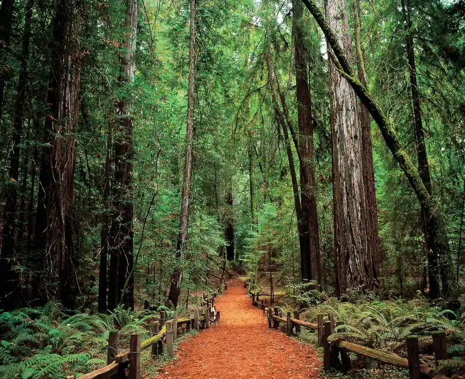

Wine gets most of the attention, but Santa Rosa has plenty to fill the hours in between. The city was home to two of America's best-known names, Charles Schulz and Luther Burbank, and it sits within an hour of ancient redwoods, a wild coastline and one of the most unusual wildlife parks in California.
In town
Charles M. Schulz Museum
The creator of Peanuts lived and worked in Santa Rosa for more than thirty years. The museum, about ten minutes from downtown, holds original strips, a recreation of his studio and rotating exhibitions. Across the street, Snoopy's Home Ice is the ice arena Schulz built for the town.
Luther Burbank Home & Gardens
A short walk from Old Courthouse Square, the preserved home and gardens of the horticulturist who developed more than 800 plant varieties. The gardens are free to wander, and docent-led tours cover the house in season.
Museum of Sonoma County
Right downtown on 7th Street, with rotating art and history exhibitions about the county's past and present. An easy hour before lunch.
Railroad Square
West of the highway, the historic district grew up around the restored railroad depot. It is lined with antique shops, independent restaurants and bars, and the SMART train station is right there.
Wildlife and open space
Safari West, fifteen minutes north, is a 400-acre wildlife preserve with giraffes, rhinos, cheetahs and hundreds of other animals. Guided safari tours in open-air vehicles are the way to see it, and you can even stay overnight in a tent cabin.
On the east side of town, Trione-Annadel State Park has more than forty miles of hiking and biking trails over 5,000 acres, and neighboring Spring Lake Regional Park has a lifeguarded swimming lagoon and boat rentals in summer.

Day trips
Armstrong Redwoods State Natural Reserve, near Guerneville, is about thirty-five minutes west. Some of the trees are more than 1,400 years old, and the main loop is flat and easy. In summer, pair it with a paddle on the Russian River, where outfitters rent canoes and kayaks.
Keep going west and you reach Bodega Bay and the Sonoma Coast in under an hour: headland hikes, sheltered coves, fresh crab and the town Hitchcock made famous in The Birds.
Evenings and early mornings
The Luther Burbank Center for the Arts brings Broadway tours, concerts and comedy to a 1,600-seat hall on the north side of town. And if you can handle an early start, a sunrise hot air balloon flight over the vineyards is one of the most memorable ways to see the county.
Before you go
- Safari West tours and balloon flights book up, so reserve ahead.
- Check park conditions after heavy rain or during fire season.
- The coast is often cooler and foggier than town. Bring a layer.
Plan your days
The attractions directory lists addresses and directions for everything here, and the attractions guide covers more ideas for a first visit or a fifth. Our hotels, Art House Santa Rosa and Hotel E, are a short walk from the museum, the Burbank gardens and the square.
Plan your stay downtown
Browse hotels, restaurants, wineries and attractions, all in one place.
Open the directory